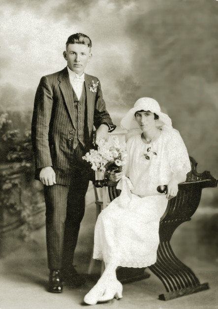
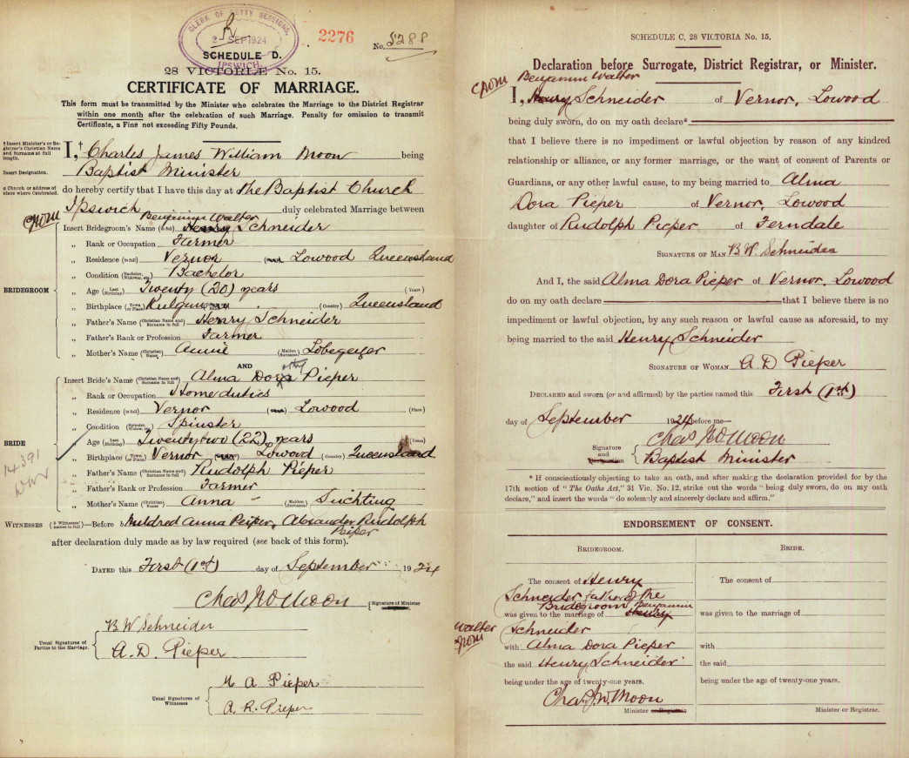
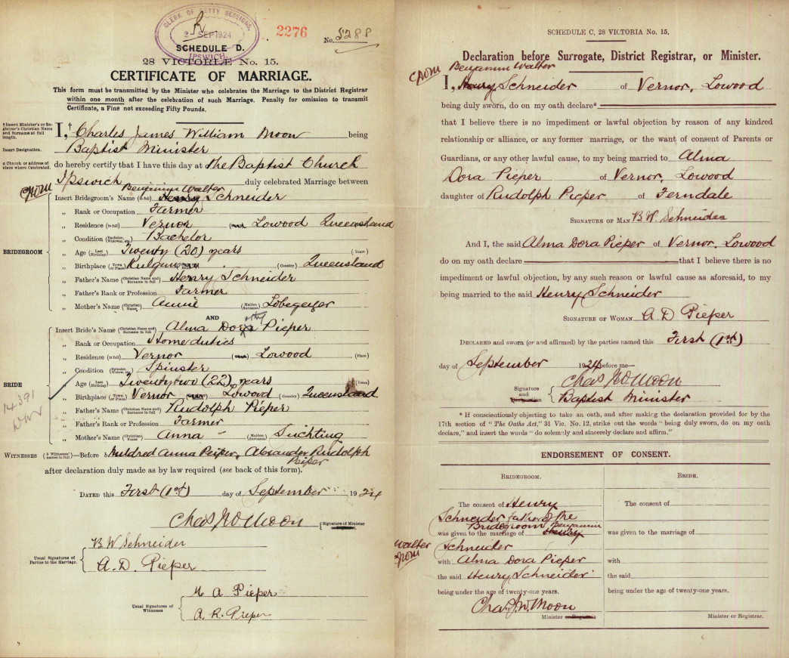
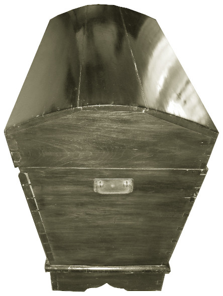

-
Ben and Alma
Our grandparents, Ben and Alma, were an ever-present force in our lives as children. Perhaps it was because our grandmother persistently adopted the role of parenting while our actual parents weren't watching. At least that's what she thought. Or perhaps it was because Ben had passed away before any of his grandchildren were born and Alma insisted on keeping his memory alive. Whatever the case the stories about him gave us a pretty good picture of what kind of guy he was.Ben and Alma on their wedding day
 Just for the record
Just for the recordThe Marriage Certificate for Ben and Alma
Ben and Alma's Marriage Certificate shows that records should be handled with caution. Mr. Moon, the Baptist Minister who performed the officiating ceremony had the groom written down as Henry, who was Ben's father, and the bride's middle name as Dora instead of Dorothy. At the end of the document Henry consented to his own marriage to his wrongly-named-would-be-daughter-in-law. Some appropriate corrections and annotations can still be seen on the original document. Who noticed it first?

Girl Inspecting Her Hope Chest
(Mädchen an ihrer Aussteuertruhe)
by Poul Friis Nybo (1869-1929)Alma's Treasure Chest
The Secrets of AlmaDora's Box
The marriage wasn't the only time that Grandma was noted down as Alma Dora. It's also 'WRIT IN STONE' on her last resting place. Nonetheless there are clouds of curiosities and mysteries surrounding Alma. One in particular is the huge "Aussteuertruhe" (a kind of dowry box) that she treasured all her life. Legend has it that it was toted across the seas by her ancestor, probably her father's mother, whom she called 'Durcy' but was otherwise known as Ernestine Schulz. Ernestine had also suffered some name changes at the hands of the authorities who insisted she was called 'Ernstine' and variously 'Schultz'. But they're all foreign sounding names and deserve to be misspelt.
Needless to say, as children we were magically attracted to that box. Discovering what secrets it held and what stories it could tell were held high on our priorities list, that is to say, on our occasional visits. As it turned out, the box was full of things filled with sentiments, hopes and wishes in the form of treasured memoribilia and inherited souvenirs from the past.
Ben, Moon and Stars
Ben also picked up a few things from his forebears. He ardently observed each newly formed crescent moon to predict the weather for the oncoming month. The cresent could be regarded as a container. If it tipped over looking like it was emptying itself, there would be rain before the next new moon. A halo around the moon meant foggy weather ahead.
Like a few other family members before him, Ben was also a keen and reputedly successful water diviner. Not only that, he was knowledgable on the type of 'wand' to use, how to fetch the correct wood to make a new one and how to ensure its effective construction and use.
{kind=link}
{kind=link}
{kind=link}
About Us
We are the descendants of Anglo-Scottish-Prusso-Germanic Australian migrants who settled in the newly formed colonies of New South Wales and Queensland in the nineteenth century. The idea behind these pages is to present the stories and characters of those early settlers along with information about their origins, descendants, families, whereabouts and activities.There are often themes running through their struggles and achievements telling a tale of resourcefulness and hardships in an alien world. The paradox of Australia as an ancient and raw continent and as a 'New World' portrays a collision of ideals and realities yet still shows a continuity in how those people dealt with everyday life.